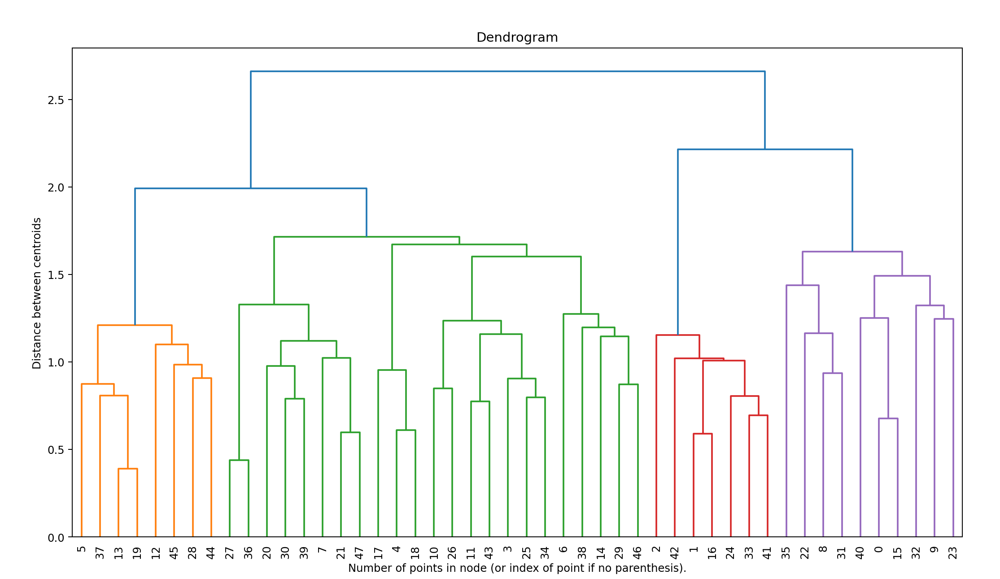
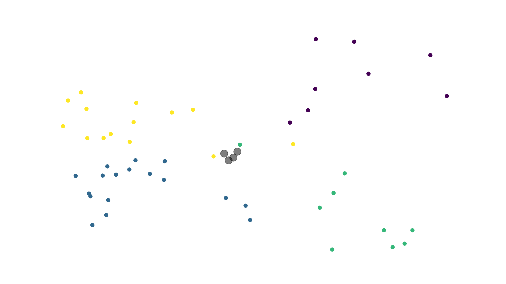

Doing OCR of pdfs
Using NLP to tokenize each question
Using hierarchical clustering
Using OpenAI to get important topics
PYQ Analysis using AI
 
Question Bank
IMPORTANT TOPICS AND EXTRA QUESTIONS
Number Conversions
YouTube Link
Watch Video
(a) How to convert (101011)2 to decimal?
(b) Convert (ABCD)16 to binary.
(c) Convert (657)8 to binary.
Boolean Functions
YouTube Link
Watch Video
(a) Simplify the following function using Boolean algebra: F(A,B,C) = AB'C + AB + A'C
(b) What are the basic postulates of Boolean algebra?
(c) Convert the following function into NAND gate implementation: F(A,B,C) = (A+B)'(A+C)
Design of Combinational Circuits
YouTube Link
Watch on YouTube
Extra questions:
(a) Design a 2-to-4 decoder using NAND gates.
(b) What is the difference between a combinational and sequential circuit?
(c) Design an adder-subtractor circuit using logic gates.
Multiplexers and Demultiplexers
YouTube Link
Watch on YouTube
Extra questions:
(a) What is the purpose of a demultiplexer?
(b) Design a 4-to-1 multiplexer using NAND gates.
(c) What is the difference between a decoder and a demultiplexer?
Counters
YouTube Link
Watch on YouTube
Extra questions:
(a) Explain the working of a Johnson counter.
(b) Design a 3-bit up-down counter using T flip-flops.
(c) Draw the truth table of a JK flip-flop.
Fan in and Fan out
YouTube Link
Watch on YouTube
Extra questions:
(a) What is the maximum fan-out of a TTL gate?
(b) Design a circuit with fan-in of 3 and fan-out of 2.
(c) What are the factors affecting fan-out?
TTL and CMOS Logic Families
YouTube Link
Watch on YouTube
Extra questions:
What are the advantages of CMOS over TTL?
Explain the working of a TTL inverter.
Design a 2-input CMOS NOR gate using two inverters and one NOR gate.
Karnaugh Maps
YouTube Link
Watch on YouTube
Extra questions:
Simplify the following function using a K-map: F(A,B,C,D) = ∑(0,1,3,7,8,9,11,15)
What are the advantages of a K-map over Boolean algebra?
How many cells are there in a 5-variable K-map?
Adders and Comparators
YouTube Link
Watch on YouTube
Extra questions:
Design a 4-bit subtractor using an adder and a 2's complementer.
What is the difference between a magnitude and signed comparator?
Draw the block diagram of an 8-bit BCD adder.
Latches and Flip-flops
YouTube Link
Watch on YouTube
Extra questions:
Design an SR flip-flop using NAND gates.
What is the difference between a latch and a flip-flop?
Explain the working of a D flip-flop with the help of a timing diagram.